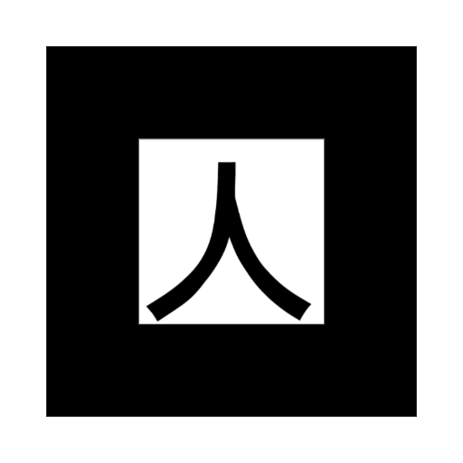

ESTACIÓN 01 · LA BRÚJULA
El secreto de Sacré Coeur empieza acá.
Abrí el juego y apuntá la cámara al cuadrado completo.Imprimí las tres hojas en blanco y negro, sin recortar el borde blanco ni deformar los cuadrados. Colocalas planas, a una altura cómoda y con buena luz.
La ruta es una propuesta, no un plano confirmado de Sacré Coeur. Antes de invitar a Bruno, Maxi y Gonzalo, elegí lugares accesibles, colocá los carteles y ajustá las pistas en config.js si corresponde. Probá el recorrido completo con un celular.
El secreto de Sacré Coeur empieza acá.
Abrí el juego y apuntá la cámara al cuadrado completo.
La curiosidad abre nuevos caminos.
Escaneá esta señal después de encontrar la brújula.Ningún gran descubrimiento se hace en soledad.
La última pieza de tu expedición.